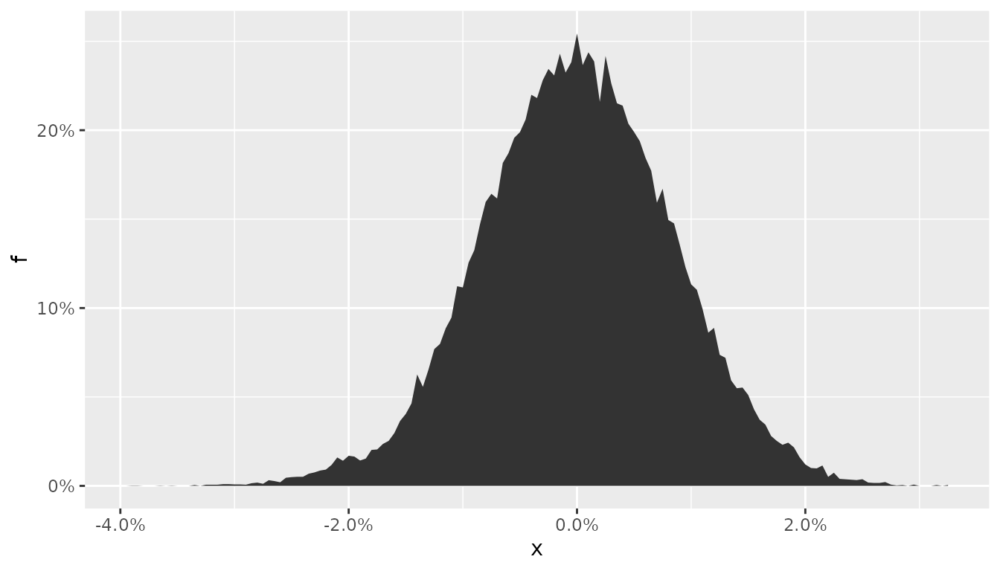

panic_copula.Rmd
library(cma)
library(dplyr, warn.conflicts = FALSE)
# stationarity - "invariance"
x <- matrix(diff(log(EuStockMarkets)), ncol = 4)
colnames(x) <- colnames(EuStockMarkets)
head(x)
#> DAX SMI CAC FTSE
#> [1,] -0.009326550 0.006178360 -0.012658756 0.006770286
#> [2,] -0.004422175 -0.005880448 -0.018740638 -0.004889587
#> [3,] 0.009003794 0.003271184 -0.005779182 0.009027020
#> [4,] -0.001778217 0.001483372 0.008743353 0.005771847
#> [5,] -0.004676712 -0.008933417 -0.005120160 -0.007230164
#> [6,] 0.012427042 0.006737244 0.011714353 0.008517217Assume there is a portfolio of stocks that is equally weighted on the 4 exchanges that appears in object x.
The main statistics of this P&L can be seen with empirical_stats():
empirical_stats(base_case)
#> # A tibble: 6 × 3
#> stat name value
#> <fct> <chr> <dbl>
#> 1 Mu base_pnl 0.000585
#> 2 Std base_pnl 0.00832
#> 3 Skew base_pnl -0.583
#> 4 Kurt base_pnl 7.83
#> 5 VaR base_pnl 0.0223
#> 6 CVaR base_pnl 0.0302The big question here is: how would the P&L statistics change in response to a shift in regime that throws a massive sell-off?
To address this question we follow A New Breed for Copulas for Risk and Portfolio Management and model the market as a mixture of “calm” vs. “panic” distributions. For details on the full specification of this market, please, see the mentioned paper.
# For the details on how the market is modeled, please, see the paper:
# "A New Breed for Copulas for Risk and Portfolio Management"
panic <- panic_copula(x, n = 50000, panic_cor = 0.97, panic_prob = 0.02, dist = "normal")
calm <- panic_copula(x, n = 50000, panic_cor = 0.00, panic_prob = 0.00, dist = "normal")We simulate 50.000 scenarios that matches the normal distribution exactly, with the sample counterparts of \(\mu\) and \(\sigma\).
In the first scenario we assume there is a 2% probability of panic, in which all the cross-correlations go to 0.97. We also model a “calm” scenario from history, with no further structure.
For consistency, we continue with an equal-weight strategy for both simulations:
# Equal-Weight Portfolio Under the Panic Market
pnl_panic <- tibble::tibble(
pnl_panic = as.matrix(panic$simulation) %*% w
)
# Equal-Weight Portfolio Under the Calm Market
pnl_calm <- tibble::tibble(
pnl_calm = as.matrix(calm$simulation) %*% w
)The “panic” P&L can be seen with plot_panic_distribution():
# PnL under the Panic Regime
plot_panic_distribution(pnl_panic, panic$p, breaks = 200)
The marginal distribution shows a hump shape format around -2%, which is a direct consequence of the panic.
The full picture - with the similarities and differences - can be seen with help of ggplot2:
stats_panic <- empirical_stats(pnl_panic)
stats_calm <- empirical_stats(pnl_calm)
bind_rows(stats_panic, stats_calm) |>
ggplot2::ggplot(ggplot2::aes(x = stat, y = value, fill = name)) +
ggplot2::geom_col(position = "dodge") +
ggplot2::facet_wrap(~ stat, scales = "free") +
ggplot2::labs(x = NULL, y = NULL, fill = "regime")While the location and dispersion doesn’t change, all the other metrics are transformed for markets that operate under multiple regimes.
Manipulating the objects stats_panic and stats_calm we can finally answer the question imposed above: a 2% probability of panic increases the kurtosis by 6% and VaR and CVaR by 10%.